A RELAÇÃO DO XADREZ COM A GUERRA FRIA
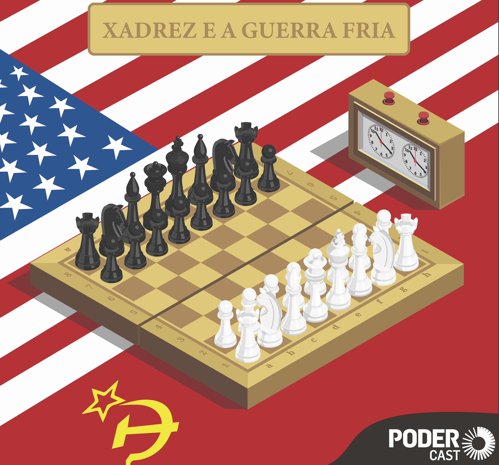
Durante décadas, o mundo viveu sob a sombra da Guerra Fria, um conflito onde as armas nucleares ditavam o medo, mas a verdadeira superioridade era testada em silêncio, sobre 64 casas de madeira. Enquanto espiões cruzavam fronteiras e mísseis eram apontados para as grandes capitais, o xadrez tornou-se a arena final para provar qual sistema o Capitalismo Americano ou Comunismo Soviético possuía as mentes mais brilhantes.
O MATCH DO SÉCULO: FISCHER VS SPASSKY (REYKJAVIK, 1972)
O auge da tensão ocorreu no verão de 1972, na Islândia. De um lado, Boris Spassky, o campeão mundial e o epítome do cavalheirismo soviético. Do outro, Bobby Fischer, um jovem do Brooklyn que havia destruído os adversários no Torneio de Candidatos com placares humilhantes de 6-0. A logística do match foi um pesadelo diplomático. Fischer se recusava a viajar, exigindo que o prêmio em dinheiro fosse dobrado.
Boris Spassky
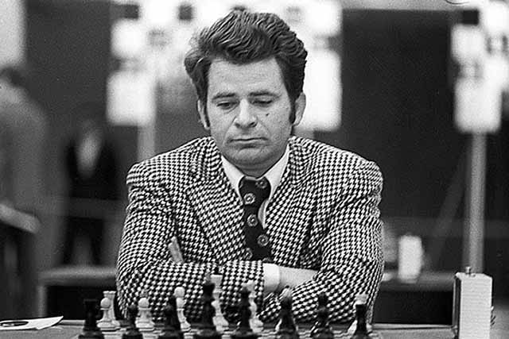
Bobby Fischer
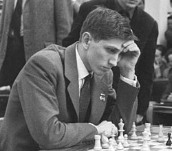
Foi necessária uma doação privada do milionário britânico Jim Slater e uma ligação histórica de Henry Kissinger para convencê-lo. No tabuleiro, Fischer começou perdendo: uma jogada bizarra na partida 1 e um W.O. na partida 2 por causa do barulho das câmeras de TV. Com o placar em 2-0 para a URSS, Fischer exigiu jogar a terceira partida em uma sala isolada nos fundos do teatro. Ali, ele quebrou o espírito de Spassky com a Defesa Benoni, iniciando uma recuperação que terminaria com o título mundial em suas mãos e o fim de décadas de hegemonia soviética.
A PARANOIA TECNOLÓGICA E AS MOSCAS NA LUMINÁRIA
A derrota de Spassky em 1972 não foi aceita passivamente por Moscou. A delegação soviética, liderada por Efim Geller, enviou uma queixa formal à FIDE alegando que Fischer estava utilizando dispositivos eletrônicos ou radiação para alterar o estado mental de Spassky. Eles suspeitavam que a cadeira de Fischer continha um transmissor de alta frequência.
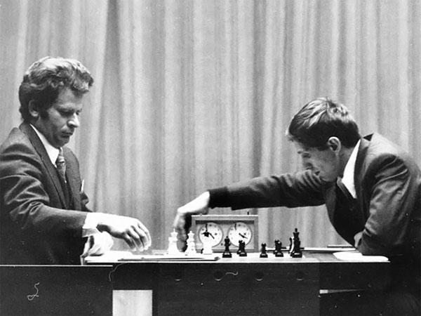
A segurança islandesa foi forçada a agir. No meio da noite, especialistas em eletrônica e policiais realizaram uma varredura completa. Eles desmontaram a cadeira de Fischer (fabricada em couro preto na Dinamarca) e a radiografaram em busca de chips ocultos. O sistema de ventilação e as luminárias foram inspecionados. No relatório final, nada foi encontrado além de duas moscas mortas em um globo de luz. No entanto, o incidente ilustra o nível de paranoia: os soviéticos simplesmente não conseguiam acreditar que um indivíduo sozinho pudesse derrotar todo o seu aparato de inteligência coletiva sem ajuda externa.
A GUERRA PSÍQUICA: IOGURTES E HIPNOTIZADORES (1978)
Se 1972 foi político, o match de 1978 entre Anatoly Karpov (o novo prodígio soviético) e Viktor Korchnoi (um desertor que fugiu da URSS) foi puramente surreal. Korchnoi era visto como um traidor da pátria, e o Kremlin mobilizou tudo para garantir que ele não vencesse.
A equipe de Karpov incluiu o Dr. Vladimir Zukhar, um parapsicólogo que se sentava nas primeiras fileiras e encarava Korchnoi fixamente durante horas, supostamente tentando hipnotizá-lo ou bloquear seus pensamentos. Korchnoi reagiu usando óculos escuros espelhados para proteger sua mente e, em certo ponto, contratou dois membros de uma seita indiana (Ananda Marga) para contra-atacar a energia negativa. O auge do absurdo foi a "Guerra dos Iogurtes": a equipe de Korchnoi protestou formalmente que a entrega de um iogurte de mirtilo para Karpov em um horário específico era um código para uma manobra tática. A FIDE teve que decretar que apenas iogurtes de cor e sabor neutros poderiam ser servidos.
VIGILÂNCIA DA KGB E O DESTINO DOS DERROTADOS
Perder para o Ocidente não era apenas uma falha esportiva; era uma humilhação para o Partido Comunista. Após a derrota na Islândia, Boris Spassky caiu em desgraça. Ele foi interrogado pela KGB, teve seus privilégios de viagem restritos e foi gradualmente isolado pela federação soviética. A pressão sobre os jogadores era constante: cada Grande Mestre soviético viajava para o exterior acompanhado de "analistas" que eram, na verdade, agentes da inteligência encarregados de impedir deserções.
Jogadores como Viktor Korchnoi e mais tarde Gata Kamsky tiveram que planejar fugas cinematográficas para pedir asilo político, deixando famílias para trás que seriam perseguidas pelo regime. O xadrez, portanto, era uma "gaiola de ouro": dava prestígio aos melhores, mas exigia lealdade absoluta ao regime. Aqueles que não se curvavam, como o gênio rebelde Mikhail Tal, muitas vezes tinham suas carreiras sabotadas pela burocracia do Estado.
voltar para o topoGaleria:
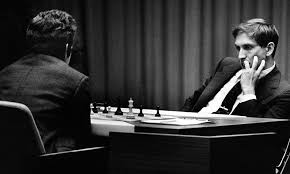
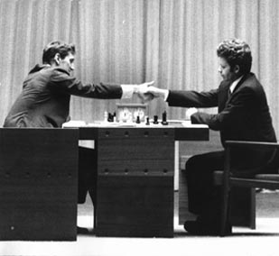
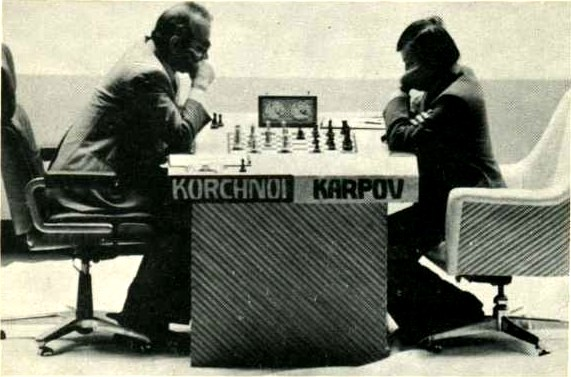
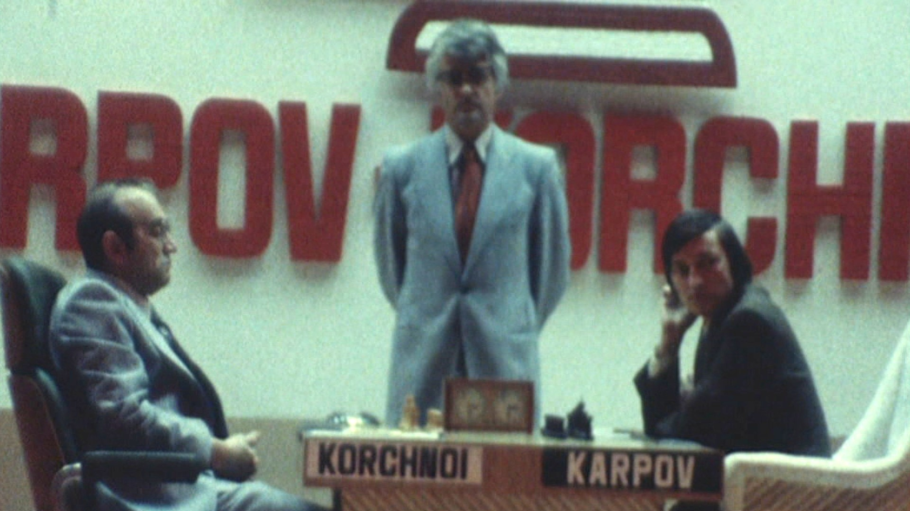
enxadristas brasileiros:
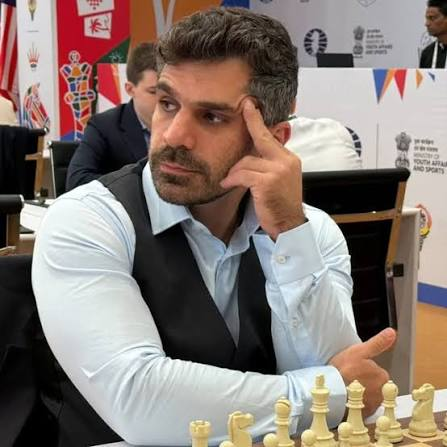
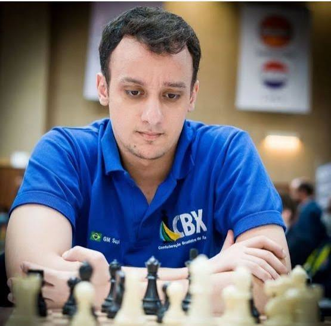
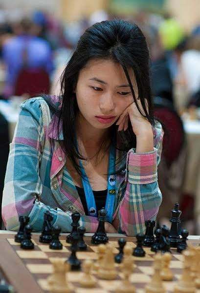
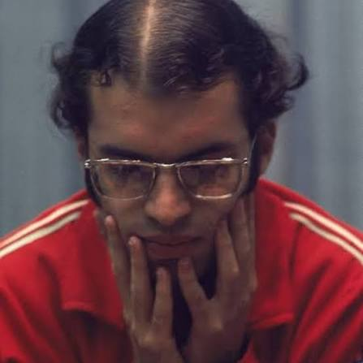
voltar para o topo